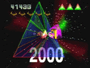

|

Review

Game Type: 3D Shooter
Based on a classic vector-drawn arcade shooter and on Tempest 2000, the
more recent Atari Jaguar version. The action takes place one screen at a
time on a network of strands stretching away into the distance known as the
Web. Enemies slide down the strands, trying to reach the Web's rim and your
ship. You must hop between different strands, shooting along them to destroy
the enemies.
Gameplay: 50/100
Tempest is a gameplay marvel... some of the time. You're forced to hop
all over the Web to shoot down enemies, and if you let them build up, you're
toast. They are of course shooting back all the while, and nothing gets the
adrenaline going like hopping onto a strand, firing a few shots, and then
having to dodge aside as an enemy bullet screams past.
A game demanding this level of skill also naturally requires you to see all
of the enemies, all of the time. As if the 3D perspective didn't make this
difficult enough, most of the later stages twist in bizzarre shapes, making
the player uncertain their ship will acually go left if they press the
control pad left, and sometimes hiding enemies until they're almost upon
you.
Woe that Tempest has this one flaw! Aside from that it's highly addictive.
Tempest 2000 added some intriguing new enemy types onto those of the original
Tempest, and Tempest X 3 adds a couple more, though the bestiary still isn't
that large. TX3 retains T2K's powerup system. And if you're not happy with
the changes TX3 introduces, you can play original Tempest, Tempest Duel (with
an opponent), and (with a code) not-quite-perfect conversions of the Jag's
Tempest Plus and Tempest 2000.
Graphics: 95/100
Jeff Minter must have loved fireworks, because his Tempest 2000 graphics
were composed almost entirely out of hundreds of individual sparks in all colors
of the rainbow, in dazzling sphere and column shapes. Sadly the rainbow colors
are mostly gone from TX3, but the same wild shapes and effects are there, and
new ones have been added. The Web is coated with melty patterns that change
color and light up as shots pass over them. Spectacular lens flare effects
abound. The beautiful stars that race by in patterns around the Web have lost
most of their color, even in T2K mode, but they're still there. Best of all, the
framerate is now silky-smooth in all modes of play. Better graphically than
even the Jag version, though the bleached look pains me.
Sound: 95/100
The awesome techno soundtrack has always been one of T2K's biggest selling
points. Although it's still good, they unfortunately used the remixes from the
T2K music CD for Tempest X mode, which I don't like as well. The original T2K
tracks are (mostly) intact in T2K mode. The sound effects are loud and clear.
The particle laser blasts can get annoying but fortunately music and sound
effects volume can be adjusted separately. Crank the stereo up!
Overall: 90/100
This might well be a contender for my all-time favorite game if it weren't
for the awkward viewpoints. TX3 is so far beyond all other games in so many
other areas, though, that I have to recommend trying it. The game is as
addictive as drugs and offers an equally intense audiovisual experience.
Codes
- Tempest 2000 and Tempest Plus Modes
- Earn the high score (the one that lets you enter 5 initials) and enter
"H V S" or "YIFF!" as your initials. On the game select menu Tempest 2000
and Tempest Plus options will appear. If you have a memory card access to
these modes can be saved to the card, even if you enter a different name in
the high score later.
|